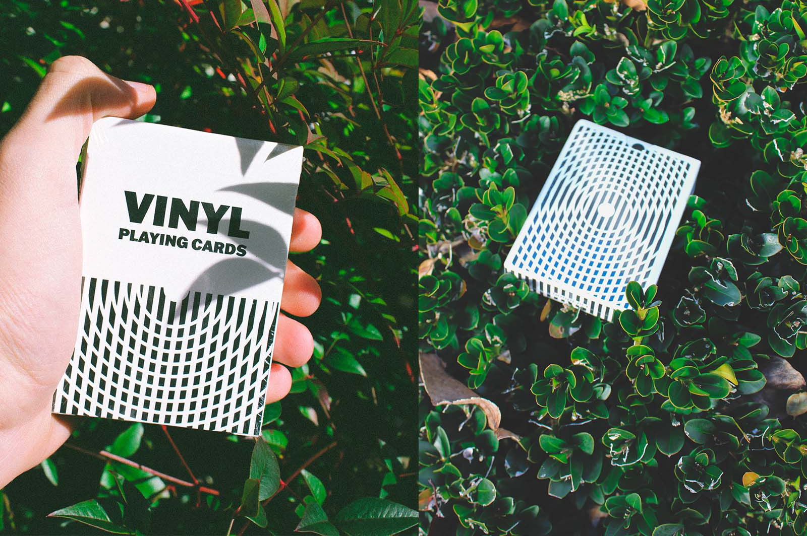
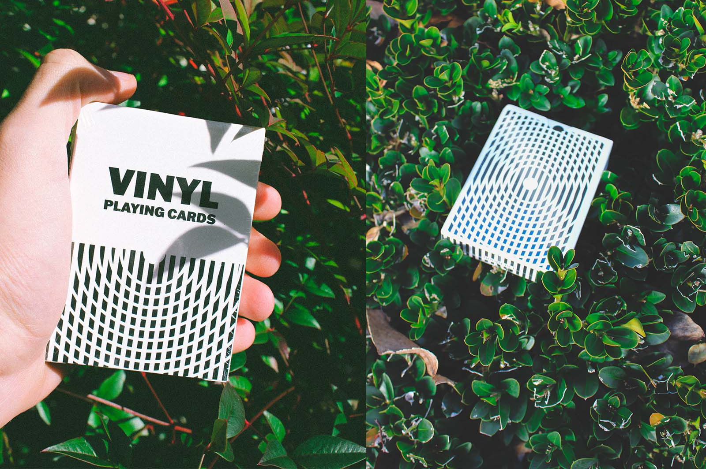

Vinyl Playing Cards
November 2020
Visual Identity & Print Design
Vinyl Playing Cards is a personal project to create a deck of playing cards to be used for Cardistry, a performance art relating to the display and arrangement of card flourishes. Contrasting from magic, cardistry is meant to be focused on visual impressiveness derived from the difficulty to perform specific flourishes.
Because of cardistry’s inherent vibrance, the design of the playing cards is made to juxtapose the eye-catching movements, bringing further excitement to the performance. The back design contains a strong contrast between a series of white circular outlines with black vertical stripes, immediately striking attention visually. The deck especially comes to life under circular movements, creating a unique blur of the card’s lines while the center circle remains clear.


 
